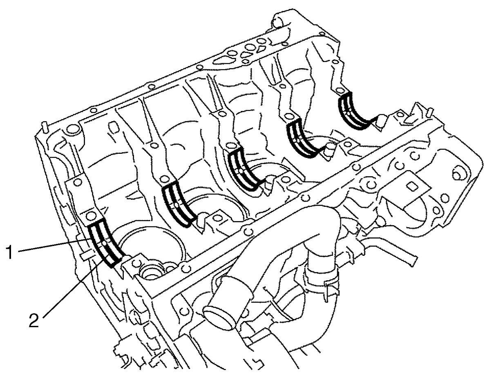
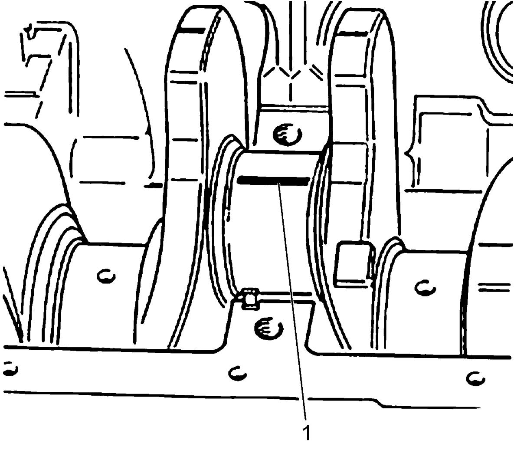
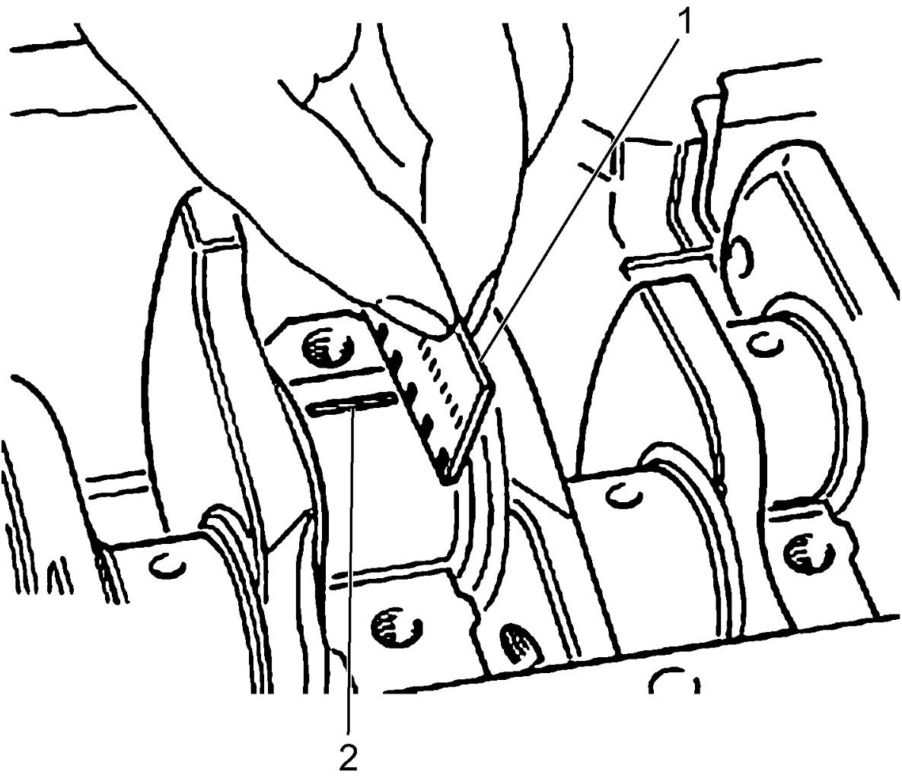
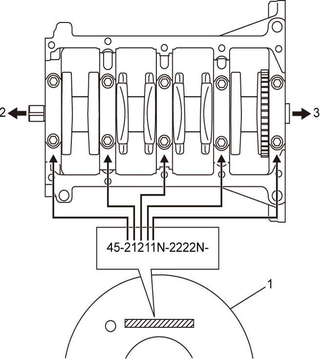
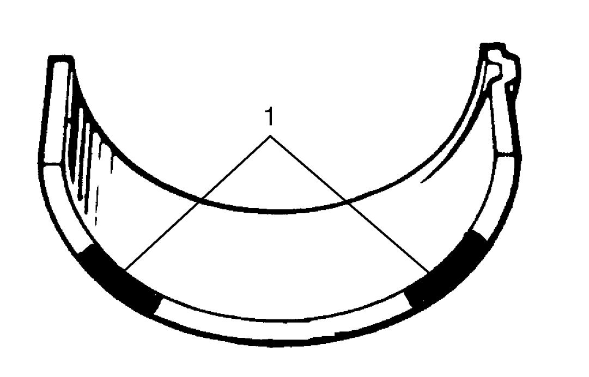
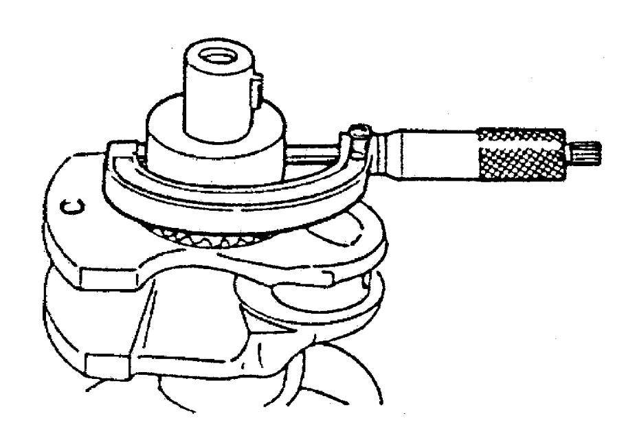

1D
| Main Bearing Inspection |
General Information
•Supply parts of main bearings are available in standard size and 0.127 mm (0.00500 in.) undersize, and standard size and undersize have 3 kinds of bearings differing in thickness.
•Upper half of bearing (1) has oil groove (2) as shown in figure.
Install this half with oil groove to cylinder block.
•Lower half of bearing does not have oil groove.

•Upper half of bearing (1) has oil groove (2) as shown in figure.
Install this half with oil groove to cylinder block.
•Lower half of bearing does not have oil groove.

 "Expand image")
Visual Inspection
Check bearings for pitting, scratches, wear or damage.
If any defect is found, replace both upper and lower halves. Never replace either half without replacing the other half.
Main Bearing Clearance
NOTE:
Do not rotate crankshaft while gauging plastic is fitted.
Check clearance using gauging plastic according to the following procedure.
1)Remove main bearing caps.
2)Clean bearings and main journals.
3)Place a piece of gauging plastic (1) to full width of crankshaft journal (parallel to crankshaft), avoiding oil hole.

 "Expand image")
4)Install main bearing caps. 
5)Remove bearing cap and using scale (1) on gauging plastic envelope, measure gauging plastic (2) width at the widest point. If clearance is not as specified, replace bearing. Always replace both upper and lower halves as a set.
If new standard bearing does not produce proper clearance, regrind crankshaft journal for use of 0.127 mm (0.00500 in.) undersize bearing.
If new standard bearing does not produce proper clearance, regrind crankshaft journal for use of 0.127 mm (0.00500 in.) undersize bearing.
Main bearing clearance
Standard: 0.011 – 0.071 mm (0.00043 – 0.00279 in.)

 "Expand image")
Selection of Main Bearing
Standard bearing
If engine is under the following conditions, select a new standard bearing as follows and install it.
•Bearing is defective.
•Bearing clearance is not as specified.
•Crankshaft or cylinder block is replaced.
•Bearing clearance is not as specified.
•Crankshaft or cylinder block is replaced.
1)Check journal diameter stamped on CKP sensor ring (1). Three kinds of numbers (“1”, “2” and “3”) represent journal diameters as shown in the following table.
Each stamped number represents respective journal diameter marked with an arrow in figure.
For example, stamped number “1” indicates that corresponding journal diameter is 52.994-53.000 mm (2.0863 – 2.0866 in.).
Each stamped number represents respective journal diameter marked with an arrow in figure.
For example, stamped number “1” indicates that corresponding journal diameter is 52.994-53.000 mm (2.0863 – 2.0866 in.).
Journal diameter
| Category | Crankshaft journal diameter |
|---|---|
| 1 | 52.994 – 53.000 mm (2.0863 – 2.0866 in.) |
| 2 | 52.988 – 52.994 mm (2.0861 – 2.0863 in.) |
| 3 | 52.982 – 52.988 mm (2.0859 – 2.0861 in. |

 "Expand image")
| 2. | Crankshaft pulley side | 3. | Flywheel side |
2)Check journal bore diameter. If measured journal bore diameter is not as specified, replace cylinder block and main bearing cap.
Journal bore diameter
56.705 – 56.718 mm (2.2324 – 2.2329 in.)
3)There are three kinds of standard bearings thickness and they are painted in the following colors.
Each color indicates the following thickness at the center of bearing.
Each color indicates the following thickness at the center of bearing.
Standard size main bearing thickness
| Color painted | Bearing thickness |
|---|---|
| Red | 1.831 – 1.837 mm (0.07208 – 0.07232 in.) |
| Blue | 1.836 – 1.844 mm (0.07228 – 0.07259 in.) |
| Yellow | 1.843 – 1.849 mm (0.07255 – 0.07279 in.) |

 "Expand image")
| 1. | Paint |
4)From number stamped on CKP sensor ring, determine new standard bearing to be installed to journal referring to the following table.
For example, if number stamped on CKP sensor ring is “2”, install a new standard bearing painted in “Blue” to its journal.
For example, if number stamped on CKP sensor ring is “2”, install a new standard bearing painted in “Blue” to its journal.
New standard size crankshaft main bearing specification
| Number stamped on CKP sensor ring (Journal diameter) | Color painted |
|---|---|
| 1 | Red |
| 2 | Blue |
| 3 | Yellow |
5)Check main bearing clearance with newly selected standard bearing referring to Main Bearing Clearance.
If clearance is not as specified, use next thicker bearing and recheck clearance.
If clearance is not as specified, use next thicker bearing and recheck clearance.
Undersize bearing (0.127 mm (0.00500 in.))
There are three kinds of undersize bearing thickness and they are painted in the following colors.
•Regrind crankshaft journal and select undersize bearing to use with crankshaft as follows, if necessary.
a.Regrind journal to the following finished diameter.
b.Using micrometer, measure reground journal diameter.
Measurement should be taken in two directions perpendicular to each other to check for out-of-round.
c.Using journal diameter measured above, select an undersize bearing referring to the following table.
Check bearing clearance with newly selected undersize bearing.
Finished journal diameter
52.855 – 52.873 mm (2.0809 – 2.0816 in.)
Reground limit
0.127 mm (0.00500 in.)
Measurement should be taken in two directions perpendicular to each other to check for out-of-round.
c.Using journal diameter measured above, select an undersize bearing referring to the following table.
Check bearing clearance with newly selected undersize bearing.

 "Expand image")
Undersize bearing specification
| Measure journal diameter | Color painted |
|---|---|
| 52.867 – 52.873 mm (2.0813 – 2.0816 in.) |
Brown |
| 52.861 – 52.867 mm (2.0811 – 2.0813 in.) |
Green |
| 52.855 – 52.861 mm (2.0809 – 2.0811 in.) |
Black |